Guide on making interactive COMC posts
Credits: All credit goes to u/Kingaple for figuring out the coding as seen in his fantastic COMC post which I shamelessly leveraged. Also, a shoutout to James Treworgy for creating the ImageMapster JQuery plugin which we'll be using.
1. Take a photo of your board game collection and save in a folder
2. Download index.html, jquery.imagemapster.min.js, and jquery.min.js from this zip file and extract all into a folder
3. Download and install Notepad++
4. Open index.html in Notepad++. We won't be editing the jQuery files as it's not necessary.
5. Search for and change "small3.jpg" to the file name of your photo in step 1. The photo should be in the same folder as index.html. Edit the width below to match the width of your photo. For example, "width:1400px" and "width=1400". If you don't want to mess with widths, resize your photo to 1000 pixels width.
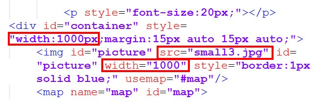
6. Open up the index.html in your browser and you should see your photo. The boxes surrounding the games and tooltips now need to be changed.
7. Go to imagemap-generator.dariodomi.de and upload your photo in step 1. Wait a a few seconds and your photo should appear.
8. Click on each corner of your first board game until it is surrounded. In the image below, Star Wars: Rebellion is surrounded.
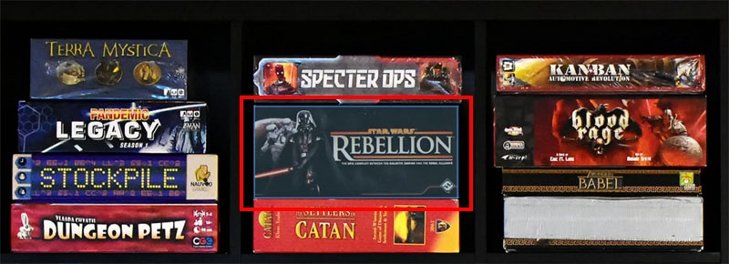
9. Go to the bottom of the image maping webpage and copy the coordinates in the first box. In this case, the coordinates are "508,581,508,633,776,641,776,589". Ignore the rest of the text. Also, make sure to push "Clear All" to remove all previous coordinates before mapping the coordinates of the next game.
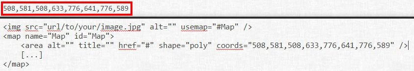
10. Go to the first mention of boardgamegeek in index.html and replace the coordinates below with the coordinates that you copied above. Each game will be identified by a different game ID. In this case, it is "game-138".
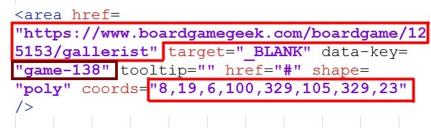
11. Replace or remove the link to the respective boardgamegeek page. A user will be sent to this page when they click inside the coordinates. To remove the hyperlink, delete "href="https://boardgamegeekcom/boardgame/..." target ="_BLANK""
12. To edit the information that appears when a user hovers over the coordinates, edit the toolTip text replacing the name of the game and your comments. Ensure that this tooltip information is related to the same game ID as above. In this case, "game-138". Also, if you need to use an apostrophe in the text, you must use \' instead of simply ' as ' is how you end the container for the text.
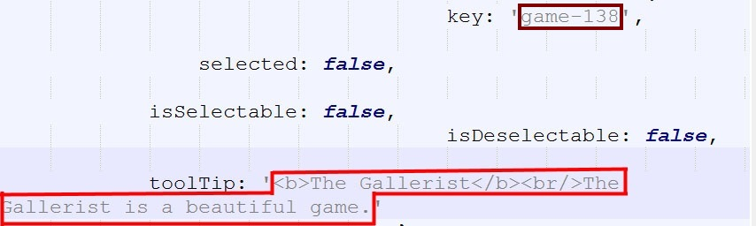
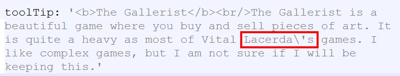
13. Open up index.html in your browser and hover over your first game. The tooltip and shaded shape should appear when you hover over it.
14. Repeat steps 7 to 12 for each game shown in the photo. It is helpful to have a dual pane view so that you edit the tooltips and coordinates for each game without having to scroll. Right click on the index.html tab and select "Clone to other view". You're now editing two parts of the same file at the same time.
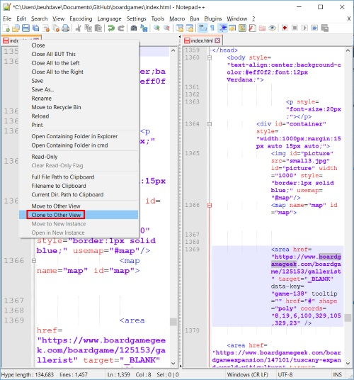
15. If you have fewer games that are in the template, you should delete extraneous tooltip and coordinate codes. Inversely, if you have more games than in the template, you'll have to add new code. Make sure to create new unique game IDs for each new code that you create. In the example below, if you have 2 fewer games than in the template, delete the last 2 entries. It should look something like below.
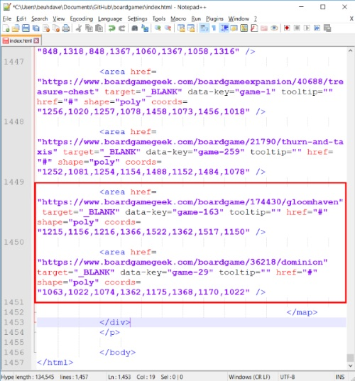 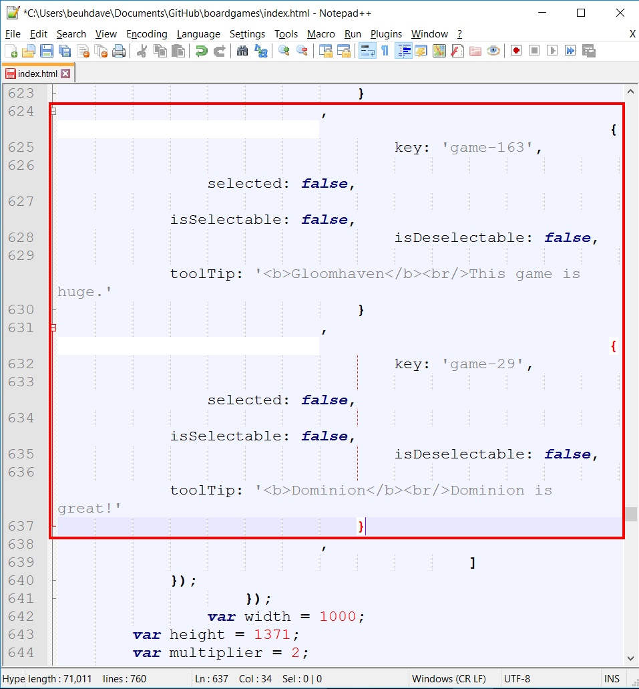
16. Save index.html and make sure that everything looks right. You will now have to upload all of this somewhere on the internet. You can use any webhost, but I recommend github pages. It's fast and it's free.
17. Make a new account at pages.github.com. The username that you choose will be part of the public URL. username.github.io. You don't need to download the github desktop tool or use a terminal as it may be easier if you just uploaded the files directly on the github website. If you do use the github desktop tool, login and make sure you add a summary and then push "Commit to master" and then "Sync". The modified files will be uploaded to github which should appear momentarily online.
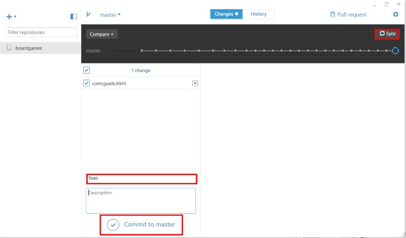
18. Create a new repository and give it any name. For example, you can name your repository boardgames. This means that the page will be display at username.github.io/boardgames/
19. For the repository to be published on the internet, go to your repository page, click on "Settings" next to a gear icon and go down to "Source" and select "master branch". You'll also find your public URL here.
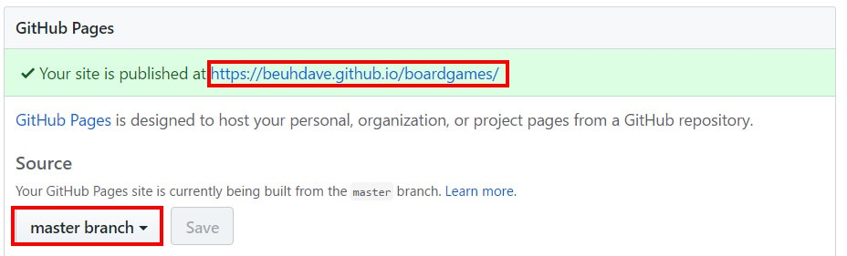
20. Go back to your repository page, upload the 4 files: index.html, jquery.imagemapster.min.js, jquery.min.js and your photo file
21. Navigate to your public URL that you found in settings. That's it!